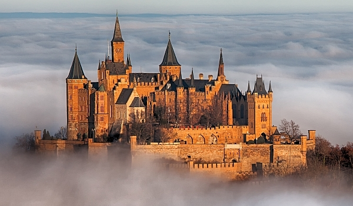

Castelul Neuschwanstein

Castelul Neuschwanstein (în germană Schloss Neuschwanstein) este un castel în stil romantic - renascentist construit la sfârșitul secolului al XIX-lea pe un deal accidentat aflat deasupra satului Hohenschwangau de lângă Füssen (în sud-vestul Bavariei, Germania). Palatul a fost comandat de regele Ludovic al II-lea al Bavariei ca un refugiu și ca un omagiu adus lui Richard Wagner. Contrar părerilor comune, Ludovic a plătit lucrările de construcție ale palatului din averea sa personală și împrumuturi extinse, nu cu fonduri publice bavareze .
Castelul Babelsberg

Babelsberg (Muntele lui Babel) este cel mai mare cartier al orașului Potsdam, unde în prezent se află un studiou cinematografic german. Tot aici în cartier se află gimnaziul (BFG) și Școala Superioară de actorie (HFF). Originea etimologică a cartierului provine din limba slavă cu variantele Pavelberg, Babertsberg, Boberow ultimul termen înseamnă locul unde sunt castori. Ulterior prin anul 1938, denumirea locului a fost schimbată după denumirea biblică Babel, și din același an Babelsberg aparține de Potsdam.
Castelul Hohenzollern
Dincolo de zidul de cărămidă al bastionului vestic din Castelul Hohenzollern, se întind ţinuturile străvechi ale şvabilor din sudul Germaniei. Satele şi oraşele lor, podgoriile şi lanurile se lasă păzite de două lanţuri muntoase deloc falnice: Munţii Pădurea Neagră şi Munţii Schwäbische Alb. Sub crestele lor împădurite, o mare dinastie germană se năştea acum 1000 de ani, pentru a scrie file importante din istoria ţării şi a întregii Europe.